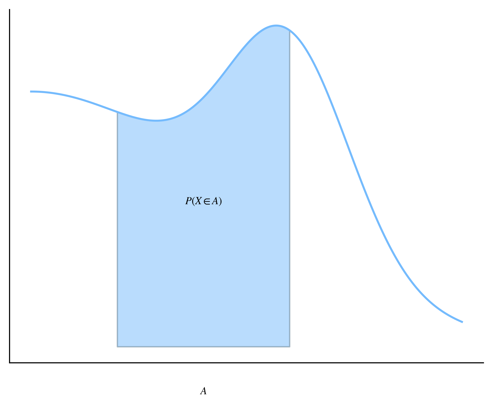

14.2. Variabili aleatorie continue#
Di seguito formalizziamo e generalizziamo i nuovi concetti che sono emersi nel paragrafo precedente. In particolare, partiamo dalla definizione di variabile aleatoria continua.
Definition 14.1 (Variabile aleatoria continua)
Una variabile aleatoria \(X\) si dice continua quando il suo dominio \(D_X\) è un insieme continuo.
Il calcolo di probabilità di eventi collegati a una variabile aleatoria continua viene normalmente fatto utilizzando la relativa funzione di ripartizione, che è definita esattamente come nel caso di una variabile aleatoria discreta, oppure in termini della funzione di densità introdotta in modo informale nel paragrafo precedente. Per definire questo concetto in modo più preciso, notiamo innanzitutto che per \(x \in \mathbb R\) e \(\Delta x \in \mathbb R^+\), è sempre possibile considerare l'evento \(X \in (x, x + \Delta x]\) che si verifica quando \(X\) assume valori nell'intervallo che ha \(x\) come estremo sinistro e \(\Delta x\) come ampiezza. Infatti, in base alla Definition 12.1 sappiamo che
è sempre contenuto nell'algebra degli eventi \(\mathsf A\) che stiamo considerando, e siccome
il Theorem 11.2 ci permette di concludere che anche \(X^{-1}((x, x + \Delta x])\) è contenuto in \(\mathsf A\). Risulta dunque ben definito il rapporto
così come il suo limite per \(\Delta x \to 0\), che permette di definire la la densità di probabilità in \(x\).
Definition 14.2 (Funzione di densità)
La funzione di densità di una variabile aleatoria continua \(X\) è una funzione \(f_X: \mathbb R \rightarrow \mathbb R^+\) che associa a ogni argomento \(x \in \mathbb R\) il valore
che indica la densità della probabilità che \(X\) assuma valori a destra di \(x\).
Siccome
si verifica facilmente che per ogni \(x \in \mathbb R\) il valore \(f_X(x)\) equivale al limite del rapporto incrementale di \(F\) quando l'ampiezza del relativo intervallo tende a zero, e quindi la funzione di densità di una variabile aleatoria continua \(X\) coincide con la derivata prima della sua funzione di ripartizione.
Example 14.2
Le funzioni di ripartizione e di densità della variabile aleatoria continua \(X\) introdotta nel paragrafo precedente sono definite rispettivamente nel modo seguente:
e
dunque si verifica facilmente che \(F_X' =f_X\).
La funzione di ripartizione è quindi una primitiva della funzione di densità, e il teorema fondamentale del calcolo integrale [1] implica che per ogni \(a, b \in \mathbb R\) tali che \(a < b\) si ha
Considerando il limite per \(b \rightarrow -\infty\) si ottiene, analogamente, che \(\mathbb P(X \leq x) = \int_{-\infty}^x f_X(x) \, \mathrm d x\). Più in generale, dato un qualsiasi insieme \(A\) esprimibile in termini di operazioni fondamentali effettuate su intervalli, varrà dunque
e quindi la probabilità \(\mathbb P(X \in A)\) è interpretabile in termini dell'area contenuta tra l'asse delle ascisse e il grafico della funzione di densità di \(X\) ristretta all'insieme \(A\), come esemplificato in Fig. 14.3.
Show code cell content
import matplotlib.pyplot as plt
from myst_nb import glue
import numpy as np
from scipy.stats import norm
plt.rcParams.update({
'font.size': 8,
'text.latex.preamble': r'\usepackage{amsfonts}'
})
# to ensure that pdf is a probability density
Z = norm()
norm_factor = (1 - Z.cdf(3 * 2**0.5))/ 2**0.5 + 5**0.5
def pdf(x):
return (1.2 * np.exp(-.1*(x)**2) + np.exp(-(x-3)**2)) / norm_factor
fig, ax = plt.subplots()
x = np.linspace(-0, 5, 500)
y = pdf(x)
x_filled = np.linspace(1, 3, 500)
y_filled = pdf(x_filled)
ax.fill_between(x_filled, y_filled, alpha=0.5)
ax.plot(x, y)
ax.text(2, -.1, r'$A$', horizontalalignment='center')
ax.text(2, 0.3, '$P(X \\in A)$', horizontalalignment='center')
ax.spines.right.set_visible(False)
ax.spines.top.set_visible(False)
ax.xaxis.set_major_formatter(plt.NullFormatter())
ax.yaxis.set_major_formatter(plt.NullFormatter())
ax.tick_params(axis=u'both', which=u'both',length=0)
plt.show()
glue("pdf-interpretation", fig, display=False)

Fig. 14.3 Visualizzazione dell'interpretazione geometrica della funzione di densità di probabilità di una variabile aleatoria continua.#
Il concetto di valore atteso di una variabile aleatoria continua o di una sua funzione si ottiene estendendo la Definition 12.3.
Definition 14.3 (Valore atteso di una variabile aleatoria continua)
Il valore atteso di una variabile aleatoria continua \(X\) è definito come
nel caso in cui l'integrale converga, e risulta indefinito altrimenti. Analogamente, il valore atteso di una funzione misurabile \(g\) applicata a una variabile aleatoria continua \(X\) è uguale a
quando l'integrale converge ed è indefinito negli altri casi.
Tutte le definizioni introdotte per le variabili aleatorie discrete che coinvolgono il loro valore atteso o valori attesi di loro funzioni rimangono valide anche per le variabili continue. Per esempio, la varianza di una variabile aleatoria continua \(X\) sarà ancora definita come il valore atteso del suo scarto quadratico da \(\mathbb E(X)\), la deviazione standard continua a essere uguale alla radice quadrata della varianza e così via.
Example 14.3
Il valore atteso della variabile aleatoria \(X\) introdotta nel paragrafo precedente è
e analoamente la sua varianza è uguale a
Anche tutte le definzioni già introdotte e definite in termini di probabilità calcolate su una variabile aleatoria rimangono invariate nel caso continuo, sebbene la continuità del supporto permetta in alcuni casi di ottenere delle notevoli semplificazioni rispetto a quanto accade per le variabili aleatorie discrete. È questo il caso del calcolo dei quantili.
Definition 14.4 (Quantili di una v.a. continua)
Fissato \(q \in [0, 1]\), il quantile di livello q di una variabile aleatoria continua \(X\) è il più piccolo valore \(x_q \in \mathbb R\) tale che
Come per il caso discreto, (14.8) equivale a \(F_X(x_q) = q\). La continuità della funzione di ripartizione ci permette però molto spesso di esprime il quantile come \(x_q = F_X^{-1}(q)\). In alcuni casi, la forma analitica di \(F_X\) permette di semplificare ulteriormente i conti, come nell'esempio che segue.
Example 14.4
Sempre considerando la variabile aleatoria \(X\) introdotta nel paragrafo precedente, per risolvere \(F_X(x_q) = q\) quando \(q \in (0, 1)\) è necessario considerare argomenti della funzione di ripartizione compresi strettamente tra \(0\) e \(1\). In questa regione di \(\mathbb R\) \(F_X\) è uguale alla funzione identità, dunque \(F_X(q) = q\). In altre parole il quantile di livello \(q\) di \(X\) è uguale al livello stesso, e quindi a \(q\).
I livelli non considerati si trattano facilmente a parte nel modo seguente:
si ha \(\mathbb P(X \leq x) = 1\) per ogni \(x \geq 1\), dunque \(x_1 = 1\);
analogamente, \(\mathbb P(X \leq x) = 0\) è sempre verificato quando \(x \leq 0\), pertanto \(x_0 = -\infty\).